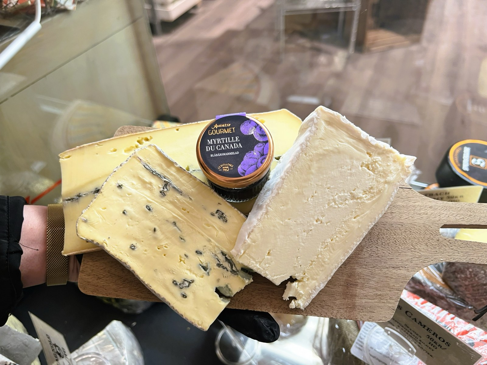

Fika
Drömmar med Earl Grey
Farligt goda drömmar med smak av Earl Grey. Underbara till fikat och till picknicken i solen.
Se inlägget
Varje månad delar vi ett nytt recept med godsaker från butiken. Här samlar vi dem alla, så att du alltid har inspiration nära till hands.
Månadens recept
En krämig vardagsfavorit med friskt citrontryck, mustig parmesan och krispiga haricots verts. Parmesanen hittar du förstås i vår ostdisk.
Ur receptarkivet
Varje månad delar vi ett nytt recept på Instagram. Här är några av våra favoriter.
Fika
Farligt goda drömmar med smak av Earl Grey. Underbara till fikat och till picknicken i solen.
Se inläggetAlkoholfri drink
En riktigt frisk drink för varma dagar, med ginger beer och lime.
Se inläggetAlkoholfri drink
En söt sommardrink för dig som älskar jordgubbar. Gott som den är, eller med en skvätt gin.
Se inläggetAlkoholfri drink
Frisk och god när vi börjar sitta ute och vända ansiktet mot solen.
Se inlägget